Go Green Exaplanation :
This page is for user to fetch Green Cars . Users will be able to fetch green cars . User can select a car
and get details of carbon dioxide and green scores. They can also fetch the data of how much mileage each car provides
in highway, city and both combined. user has a flexibilty to fetch these data in 3 ways .
1)By Car model name.
2)By Car Mileage input.
3)By Car Green score.
Todays Fuel Price :
This is the information fetched from a web service to provide current fuel price .
Base Technologies used:
1) ASPX (to fetch data from the DB for dropdowns And table output)
2) XML (webservice)
Responsive:
Fully Responsive , no Bootstrap Used.
Table:
FUEL_ECONOMY_DATA_2011
FUEL_ECONOMY_DATA_2012
FUEL_ECONOMY_DATA_2013
FUEL_ECONOMY_DATA_2014
FUEL_ECONOMY_DATA_2015
Class Diagram :
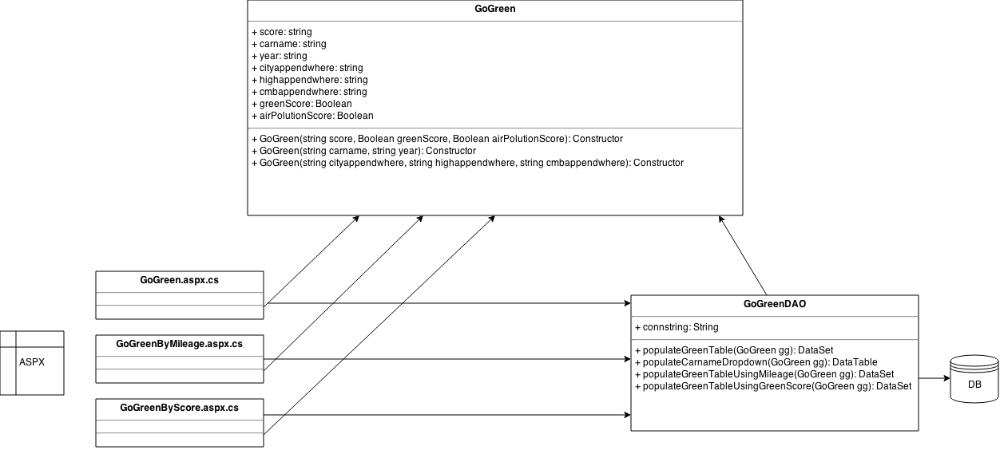
- Marque Todays Fuel Information:
- Go Green By Car Model
- Go Green By Car Mileage
- Go Green By Score
- Get CO2 emission of your Car
-
This is fetched on page load and these information is given by government website as xml through web service fueleconomy.gov.
For more technical details go to the following experiments: - >
CLICK HERE For Experiment on Web service
CLICK HERE For Experiment on Marque -
Explanation
When user buys a car there is always budget constraints in his mind and before buying he can check what is of that mileage car. This tab will allow user to fetch go green information by car model.
Access to this page:
User Inputs:
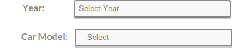User should give input year and car model. I have inserted records in DB for each car. We have 5 tables where data of 2011,2012,2013,2014 and 2015 years is available. According to user selection of the year and Car Model that particular year table will be used to query in DB and Car models are populated automatically.
Sample Output:
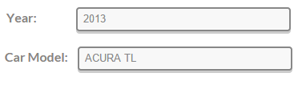
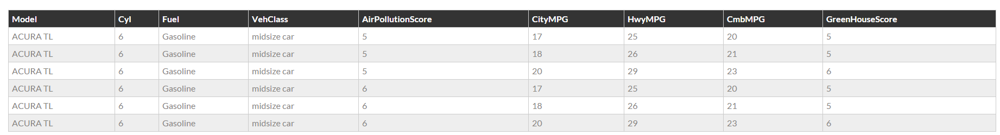As user has selected the Acura TL model, he will be able to fetch all the information of that particular car.
For more technical details go to the experiment: - > CLICK HERE
Source Code
ASPX
Code Behind
Class to Store Values to pass to DAO
DAO
Style Sheet of the page
Style Sheet of the table
-
Explanation
This Tab will fetch the list of cars and their green scores according to the user input of the city mileage or highway mileage and combined mileage. In this page I have designed query that it will combine all the five years table information and fetch the information list.
Access to this page:
User Inputs:
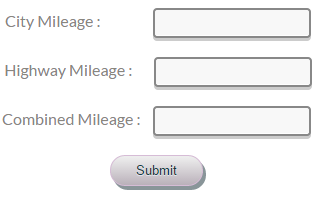
Three types of search:
Output Sample example by giving any of the two input:
1) By giving by input any one of the City Mileage, Highway Mileage or Combined Mileage.
2) By giving by input any two of the City Mileage, Highway Mileage or Combined Mileage
3) By giving by any of the three inputs.
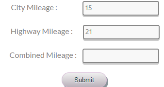
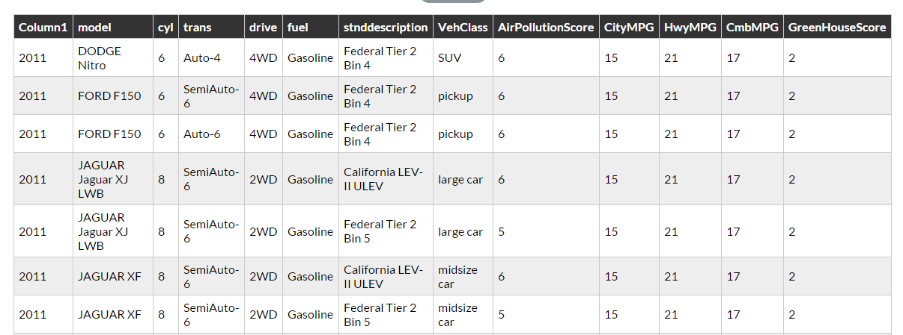
When user will give the mileage information of as 15 and 21 for city mileage and highway mileage Respectively code behind will create a where condition query and fetch all the cars info from 2011, 2012, 2013, 2014, 2015.
For more technical details go to the experiment - > CLICK HERE
Source Code
ASPX
Code Behind
Class to Store Values to pass to DAO
DAO
Style Sheet of the page
Style Sheet of the table
-
Explanation
This Tab will fetch the list of cars and their mileage information according to the user selection of the green house score or air pollution score. In this page I have designed query that it will combine all the five years table information and fetch the information list.
Access to the Page:
User Inputs:
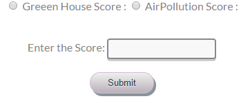
There are two ways in which user will be able to fetch the go green information. 1) By Green House Score
Sample Output by green score::
2) Air Pollution Score
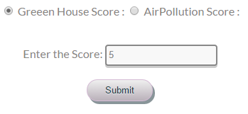
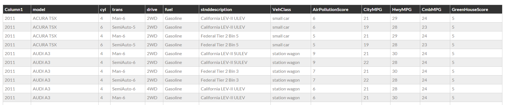
User when selected Greenhouse score, Cars are fetched as per Greenhouse score entered.
Sample Output by Air pollution Score:
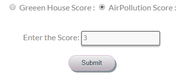
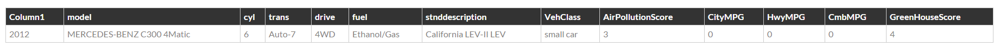
User when selected Air pollution score, Cars are fetched as per Air pollution score entered.
For more technical details go to the experiment - > CLICK HERE
Source Code
ASPX
Code Behind
Class to Store Values to pass to DAO
DAO
Style Sheet of the page
Style Sheet of the table
-
Explanation
I have contacted Car Carbon footprint developer for the iframe code which will show only car information.
Access to the page:
User interface:
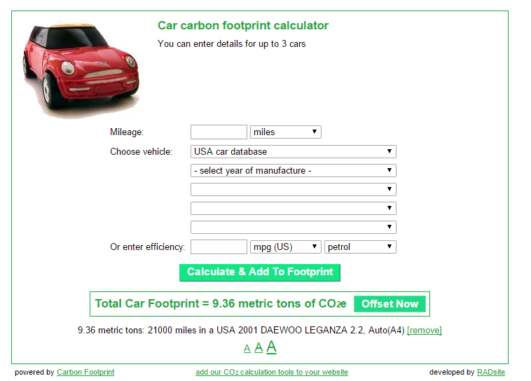User should select the prepopulated drop downs from database (i.e. car name, year and car model) and enter zip code to fetch the price information.
For more technical details go to the experiment: -> CLICK HERE
Source Code
ASPX
Code Behind
Class to Store Values to pass to DAO
DAO
Style Sheet of the page
Style Sheet of the table